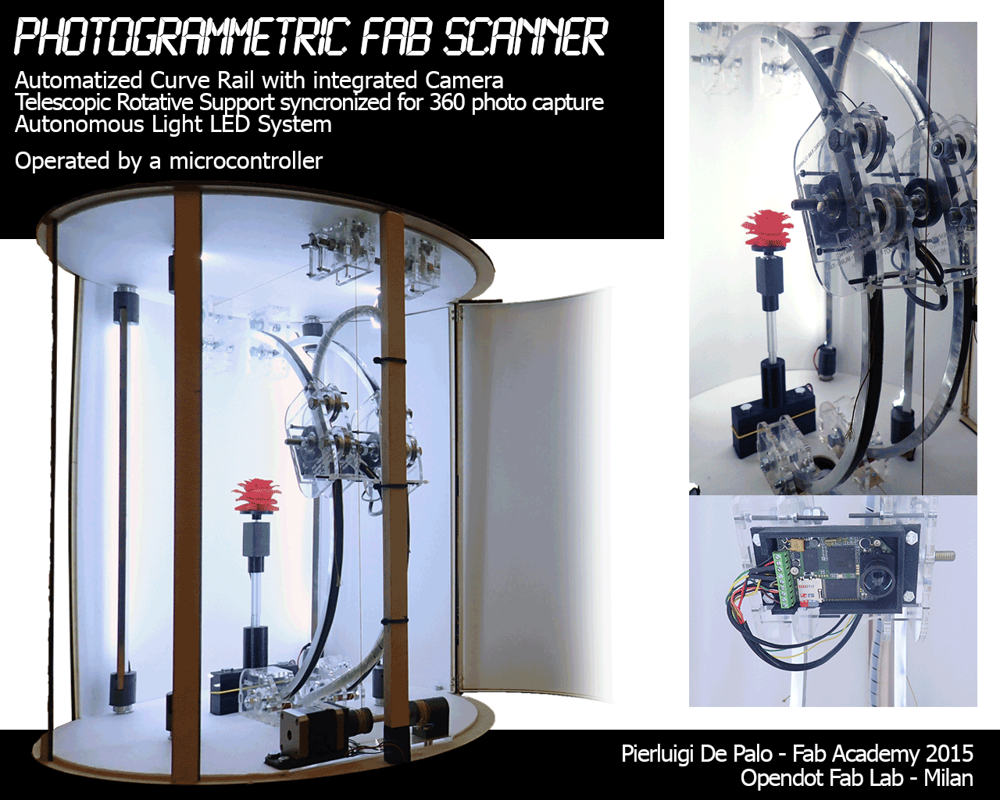

// Pierluigi De Palo //
MIT Fab Academy 2015 // Opendot FabLab // Milano Italy

HELLO WORLD
Welcome to the starting point, to the gateway to the beginning of this long journey that was and will be the Fab Academy 2015.
I am delighted to share with you all my experience regarding the development of the activities and the end results of my project: The Photogrammetric Fab Scanner.
I must honest with you, World: I'm a truly big N00B in the FAB LAB OCEANS!
Nevertheless, I am absolutely enthusiastic about having taken part in this adventure and I’m proud to have navigated the Fab Academy sailing routes.